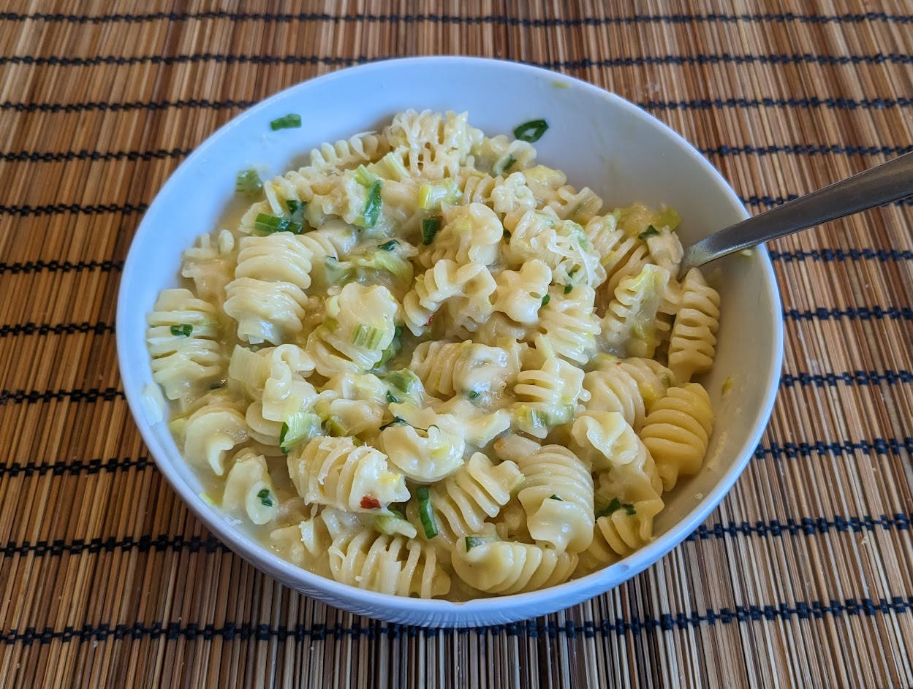

Pâtes crémeuses aux poireaux

Pour 4 personnes :
- 500g de pâtes
- 2 poireaux
- 3 oignons frais
- 5 gousses d'ail
- Une échalote
- Un filet d'anchois
- 750mL de bouillon de poulet
- 250mL de crème
- Un peu de parmesan
- Une pincée de flocons de piment rouge
- (Facultatif) Quelques brins de ciboulette
- Sel, poivre, huile d'olive
- Couper les oignons frais en tranches fines, réserver la partie verte, et faire revenir la partie blanche au fond d'une grande casserole dans de l'huile d'olive.
- Laver les poireaux, couper leur partie vert foncé, les ajouter dans la casserole.
- Éplucher et émincer l'échalote et l'ail, les ajouter dans la casserole. Cuire le tout en mélangeant jusqu'à ce que ça soit bien translucide.
- Rincer le filet d'anchois et le rajouter avec le piment, la crème, et la moitié du bouillon. Saler (pas trop, si le bouillon est déjà bien salé), poivrer, porter à ébullition, et rajouter les pâtes.
- Faire cuire le tout jusqu'à ce que le liquide soit bien crémeux et enrobe les pâtes. Goûter, si ce n'est pas bien cuit, ajouter du bouillon et continuer la cuisson. Le temps de cuisson et la quantité totale de bouillon nécessaire dépendent du type de pâtes, il faut vraiment goûter au fur et à mesure.
- Pendant que ça cuit, laver et ciseler la ciboulette, râper du parmesan, et mélanger le tout dans la casserole juste avant de servir.